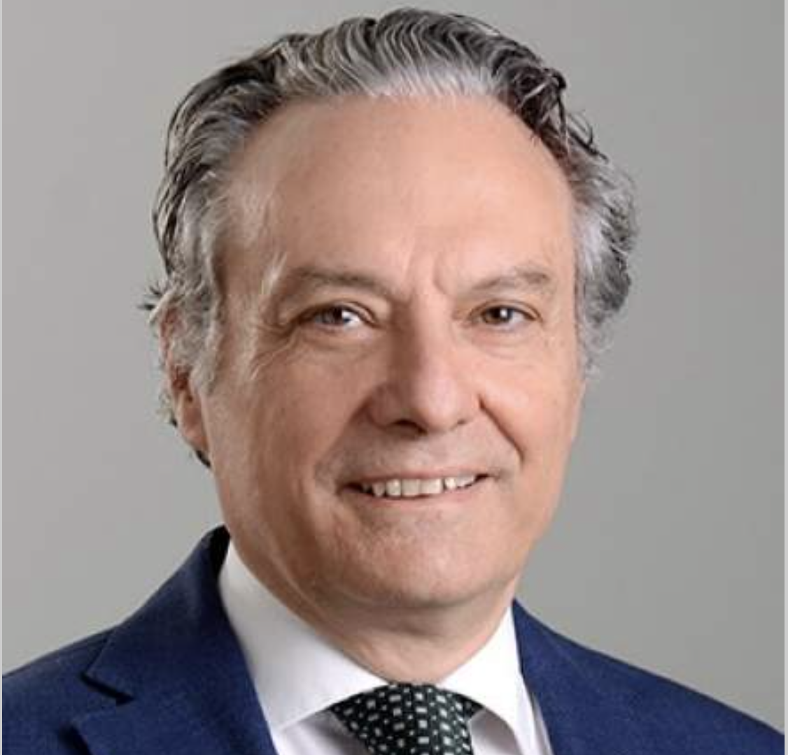
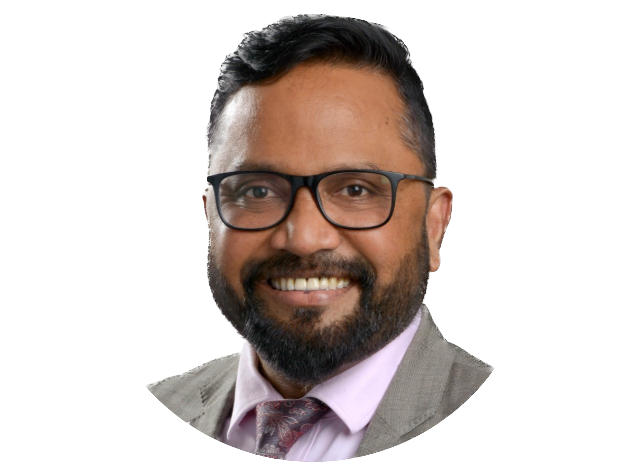
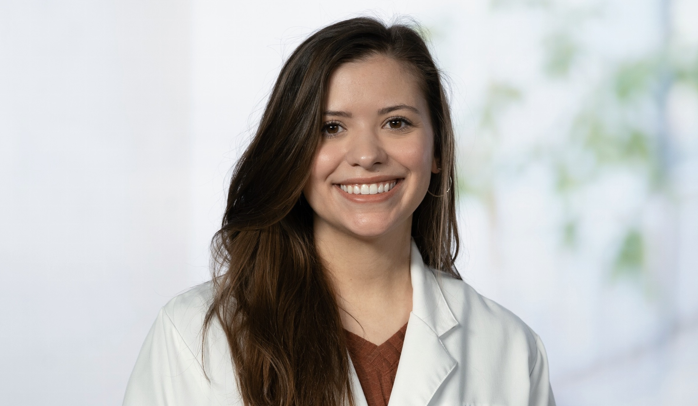
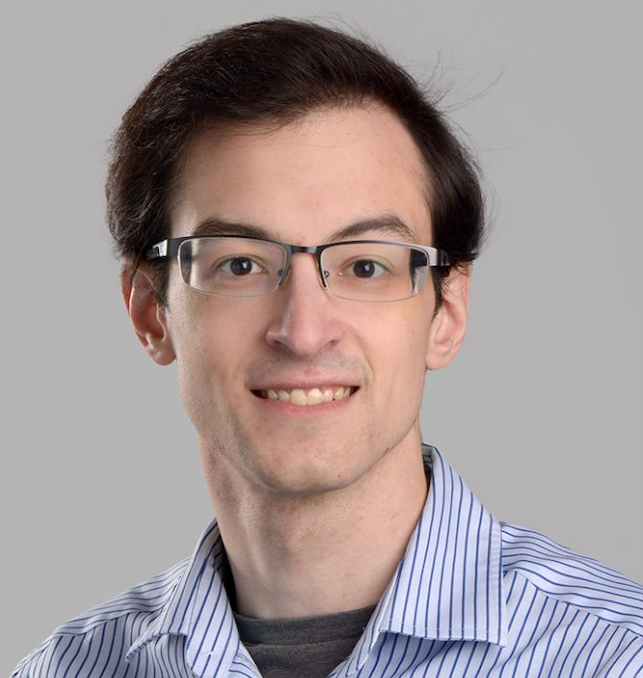
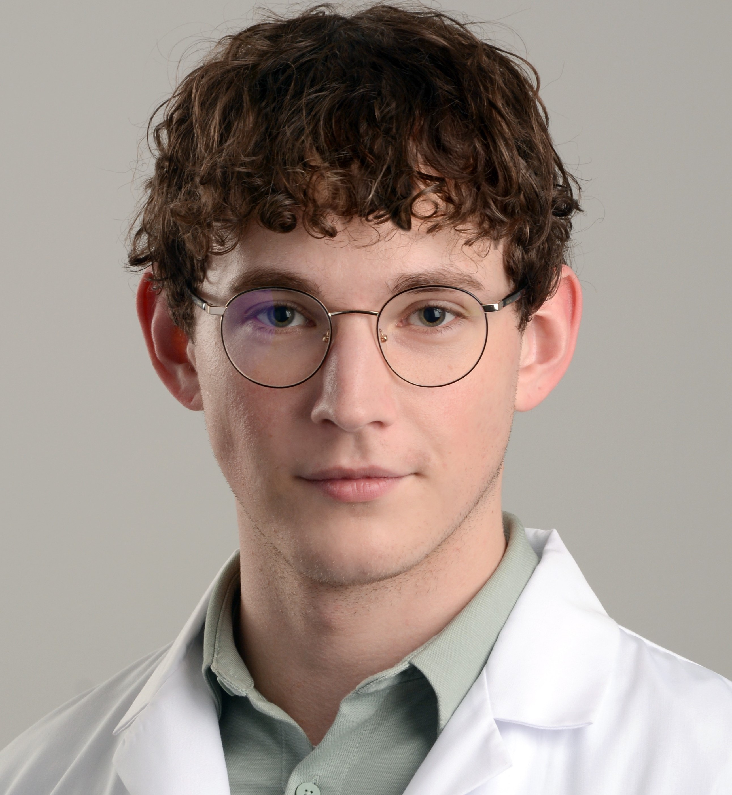
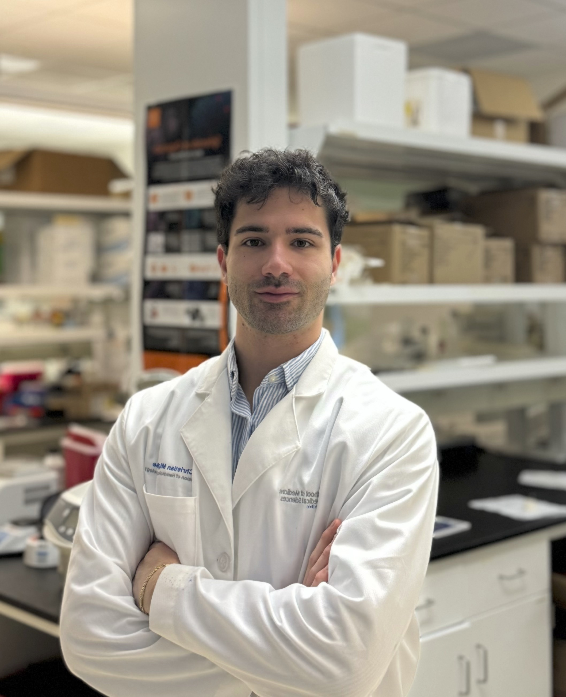
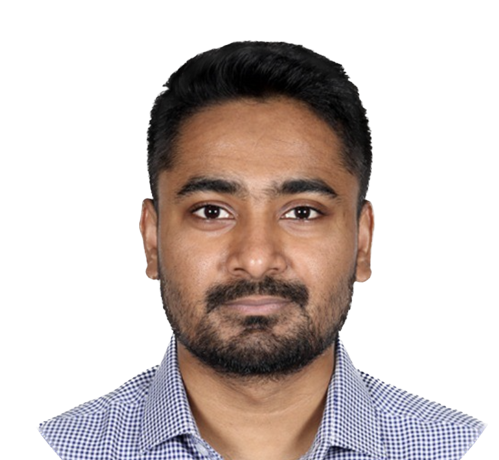
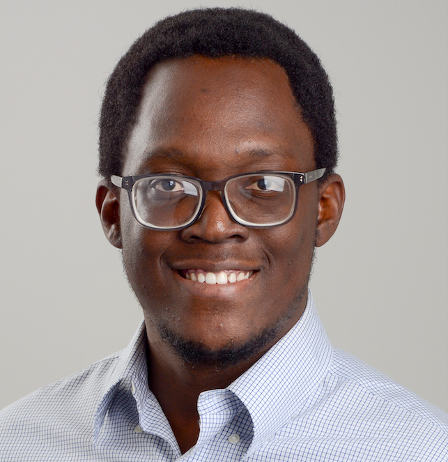

Current Members

Roberto Pili, M.D.
Principal Investigator
Roberto Pili, MD, is associate dean for cancer research and integrative oncology, and professor and chief of the Division of Hematology/Oncology in the Department of Medicine.
As associate dean, he is responsible for building the academic infrastructure for innovative and collaborative cancer research at UB and on the Buffalo Niagara Medical Campus, particularly in the areas of immunotherapies, drug development and delivery, epigenetics and lifestyle-dietary interventions. He is the founder of the UB Cancer Research Consortium.
An internationally recognized expert in genitourinary malignancies, Pili specializes in research on the role of epigenetic modifications in overcoming drug resistance and modulating response to immunotherapies. His laboratory is also studying the impact of dietary interventions as adjuvant tools in patients receiving cancer treatments.
Pili holds several patent applications and is conducting several investigator-initiated clinical trials for the treatment of genitourinary malignancies. His laboratory is based at the school’s Clinical and Translational Science Institute, and his work is funded by grants from the National Cancer Institutes and the Department of Defense.
Pili received his medical degree from Catholic University School of Medicine in Rome and completed fellowships with National Institutes of Health’s National Institute on Aging in biological chemistry and Johns Hopkins University in medical oncology. He has published 200 articles in peer-reviewed journals and serves as a reviewer for several medical journals and grants study sections of the National Cancer Institutes and the Department of Defense.
As associate dean, he is responsible for building the academic infrastructure for innovative and collaborative cancer research at UB and on the Buffalo Niagara Medical Campus, particularly in the areas of immunotherapies, drug development and delivery, epigenetics and lifestyle-dietary interventions. He is the founder of the UB Cancer Research Consortium.
An internationally recognized expert in genitourinary malignancies, Pili specializes in research on the role of epigenetic modifications in overcoming drug resistance and modulating response to immunotherapies. His laboratory is also studying the impact of dietary interventions as adjuvant tools in patients receiving cancer treatments.
Pili holds several patent applications and is conducting several investigator-initiated clinical trials for the treatment of genitourinary malignancies. His laboratory is based at the school’s Clinical and Translational Science Institute, and his work is funded by grants from the National Cancer Institutes and the Department of Defense.
Pili received his medical degree from Catholic University School of Medicine in Rome and completed fellowships with National Institutes of Health’s National Institute on Aging in biological chemistry and Johns Hopkins University in medical oncology. He has published 200 articles in peer-reviewed journals and serves as a reviewer for several medical journals and grants study sections of the National Cancer Institutes and the Department of Defense.

Sateesh kumar Poolakkad Sankaran, DDS, MDS, PgD, MSc, ICRT, MMSc
Research Scientist
Dr. Poolakkad Sankaran is an oral medicine, dental/oral oncologist and medical scientist with a distinguished educational background. He completed his Dental Surgery training and Oral and Maxillofacial Residency in India, followed by a PG Diploma and MSc in Cancer Survivorship from Cardiff University, United Kingdom. He subsequently obtained his clinical research training (ICRT) and Master of Medical Sciences (MMSc) in Clinical Investigations from Harvard Medical School. He is a practicing oral medicine specialist and dental radiologist in India and Saudi Arabia, proficient in head and neck cancers, and treats oral complications of cancer treatment, specifically oral mucositis and salivary gland hypofunction. Dr. Poolakkad Sankaran has undergone specialized training in palliative and supportive care to treat cancer patients. During this period, he diligently cared for terminally sick cancer patients and assisted their families.
Dr. Poolakkad Sankaran's research aims to eradicate gaps in cancer outcomes associated with race, ethnicity, and socioeconomic status in the Buffalo region of Western New York, with a particular interest in cancer outreach studies, clinical research on the impact of social determinants of health on cancer adverse events, and lab-based research on infectious disease outcomes stemming from oral adverse events. He established the University at Buffalo (UB) Hematology Oncology WE-BRIGHT Network, which fosters interdisciplinary collaboration in oncology mentoring and research, and the Neighborhood Network of Integrated Care (NICE) program, which brings cancer education and community seminars directly to underserved populations in Buffalo. Dr. Poolakkad Sankaran possesses vast expertise in clinical investigations, encompassing observational study designs and qualitative methodologies, including ethnography and thematic analyses. Moreover, Dr. Poolakkad Sankaran has profound knowledge and proficiency in big-data observational study methodology, outreach research, and machine learning techniques such as lasso, ridge, random forest, and gradient boosting machines.

Sabrina Orsi
PhD Candidate
Sabrina has been a Ph.D. student in the Pili Lab since 2022 through the Department of Pharmacology and Toxicology. She graduated from Virginia Tech Polytechnic Institute and State University with B.S.’s in Biochemistry and Microbiology in 2020. Before coming to Buffalo, Sabrina worked in a Neuroscience lab as an Undergraduate Research Assistant. Sabrina’s research interests include dietary interventions and metabolic based therapies. Her thesis project is focused on characterizing metabolic vulnerabilities in renal cell carcinoma with in vitro and ex vivo work in patient derived cell lines and xenograft models.

Cedrick Ball
Administrative Assistant
Cedrick started as an administrator in the lab in August 2023. He holds a bachelor’s degree in biology with a focus on human health. As a small business owner with a strong logistics background, he is dedicated to making the operations of research run as smoothly as possible from planning to patient.

Ian Shea
Research Support Specialist
Ian has been in the Pili lab since 2024 where he completed his M.S. in biomedical sciences. He holds a B.S. in medicinal chemistry from the University at Buffalo where he researched drug development of EGFR inhibitors for non-small cell lung cancer. His work in the Pili lab is spread over multiple projects with a main focus on pharmacology and mechanisms of drug resistance.

Christian Migliarese
PhD Student
Christian is a Ph.D. student in the Department of Pathology and Anatomical Sciences, where he began his doctoral studies in Summer 2024. He holds a bachelor’s degree in biotechnology from the University of Cagliari and a master’s degree in biotechnology and molecular biology from Vita-Salute San Raffaele University in Milan. Christian’s work focuses on elucidating epigenetic mechanisms underlying resistance to receptor tyrosine kinase inhibitors (RTKIs) in clear cell renal cell carcinoma (ccRCC). By identifying the epigenomic signatures linked to treatment resistance, he aims to develop therapeutic strategies that reprogram tumor cells to restore drug sensitivity. He is also involved in the development of small-molecule inhibitors targeting oncogenic drivers in translocation.

Md Imran Khan
PhD Student
Imran is a Ph.D. student in the Department of Genetics, Genomics, and Bioinformatics, where he began his doctoral studies in 2023. He joined the Pili lab in Summer 2025. He holds a bachelor’s degree in Biochemistry and Biotechnology and a Master's in Biotechnology from North South University in Bangladesh. His research interests include bioinformatics, machine learning, and cancer genomics.

Otega Oviri
PhD Student
Otega is a Ph.D. student in the Department of Pathology and Anatomical Sciences where he began his doctoral studies in Fall 2025. He holds a bachelor’s degree in Biology from the University of Abuja, Nigeria and a master’s degree in biology from Georgia State University, Atlanta.
Otega’s research interests include how dietary restriction strategies, in combination with immunotherapy, shape immune function and the immune landscape in renal cell carcinoma (RCC). He aims to understand how nutrient modulation can enhance antitumor immune response and improve therapeutic outcomes.
Otega’s research interests include how dietary restriction strategies, in combination with immunotherapy, shape immune function and the immune landscape in renal cell carcinoma (RCC). He aims to understand how nutrient modulation can enhance antitumor immune response and improve therapeutic outcomes.
Former Members
- David Zheng Qian, PhD – Postdoctoral Fellow (07/02–08/06) → Associate Professor, OSHU
- Xiao-fei Wang, MD, PhD – Postdoctoral Fellow (03/02–06/05) → Post-doc, JHU
- Yukihiko Kato, MD – Postdoctoral Fellow (04/03–08/05) → Professor, Tokyo University
- Hendrik Verheul, MD, PhD – Postdoctoral Fellow (04/05–01/07) → Professor & Director of Medical Oncology, Vrei Univ NL
- Hans Hammers, MD, PhD – Postdoctoral Fellow (07/06–06/09) → Associate Professor, UT Southwestern
- Silvia Paesante, PhD – Postdoctoral Fellow (09/07–03/11) → Pharmacist
- Li Shen, PhD – Postdoctoral Fellow (09/07–08/12) → Research Assistant Professor, UB
- Preeti Shah, PhD – Postdoctoral Fellow (04/08–06/09) → Post-doc, JHU
- Leigh Ellis, PhD – Postdoctoral Fellow (06/08–08/12) → Research Professor & Director, Uniformed Services University
- Piergiorgio Pettazzoni – Visiting PhD Student (05/09–06/10) → Scientist, Roche
- Rosalba Minelli – Visiting PhD Student (04/10–12/10) → Post-doc, MD Anderson
- Kristy Gotink – Visiting PhD Student (10/11–03/12) → PhD Student, Vrei Univ NL
- Paula Sotomayor – PhD Student (07/09–08/12) → Faculty, Pont. Univ. Chile
- Swathi Ramakrishnan – PhD Student (01/10–10/14) → Post-doc, RPCI
- Madelon Wentink – Visiting MD-PhD Student (06/15–12/15) → MD-PhD Student, Vrei Univ NL
- Sheng-Yu Ku – PhD Student (10/11–03/15) → Instructor, Dana Farber Cancer Institute
- Eric Ciamporcero – PhD Student (06/12–12/14) → Scientist, Janssen Pharma
- Remi Adelaiye – PhD Student (04/11–04/17) → Assistant Professor, UB
- Ashley Orillion – PhD Student (09/13–06/17) → Scientist, Janssen Pharma
- Kunsha Ahmed – High School Student (06/17–08/17) → Beering Scholarship, Purdue University
- May Elbana – PhD Student (04/14–07/19) → Assistant Professor, Mayo Clinic
- Paige Dausinas – PhD Student (08/18–11/18) → Manager, Global Scientific Communications, Eli Lilly
- Nur Pradani Damayanti – Postdoctoral Fellow (07/16–05/20) → Research Associate, IU
- Anthony Wood, MD – Internal Medicine Resident (07/17–05/20) → Oncology Fellow, Moffitt
- Kevin Zhang, MD – Internal Medicine Resident (07/19–05/20) → Oncology Fellow, Yale
- Eri Banno – Visiting Postdoctoral Fellow (07/18–07/19) → Faculty, University of Osaka
- Ricardo Cordova – PhD Student (07/19–01/24) → Postdoctoral Fellow, Princeton University
- Christopher Rupert – Postdoctoral Fellow (10/20–01/24) → Pharma Liaison
- Katherine Zimmerman – Medical Student (07/21–06/22) → Resident, University of Colorado
- Abbas Jawadwala – MS Student (01/23–08/24) → PhD Student, UB
- Ilaria Delle Fontane – MS Student (03/23–07/24) → PhD Student, University of Lausanne
- Tyler Gross – PhD Student (07/24–011/25) → Scientific Solutions Engineer, Seqera